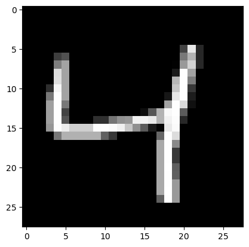

import torchimport torchvisionimport torchvision.transforms as transformsbatch_size =32# Define the transformation to apply to the datatransform = transforms.Compose( [transforms.Grayscale(), transforms.ToTensor(), # convert PIL image to PyTorch tensor transforms.Normalize((0.5,), (0.5,))]) # normalize the data to have a mean of 0.5 and std of 0.5# Load the training datasettrainset = torchvision.datasets.MNIST(root='./data/mnist', train=True, download=True, transform=transform)# Create a data loader for the training datasettrainloader = torch.utils.data.DataLoader(trainset, batch_size=batch_size)dataiter =iter(trainloader)images, labels = dataiter.__next__()
images.shape, labels.shape
(torch.Size([32, 1, 28, 28]), torch.Size([32]))
As we can see, every image is stored with one explicit channel. Let’s simplify this by removing this dimension. In addition we’ll concatenate all pixels.
images = images.view(32,28*28)images.shape
torch.Size([32, 784])
This means, we have a batch of 32 images, each with 784 pixels (28 * 28). Visuially that looks like this:
# Display the third image in the batch as an imagedef show_image(img): plt.imshow(img.view(28,28), cmap='gray') plt.show()show_image(images[2])print(f"label for this image: {labels[2]}")

label for this image: 4
Doing a Forward and Backward Pass
Building the model
Let’s set some parameters first:
nr_hidden: number of hidden layers (50)
n: number of images (32)
m: number of pixels in every image (784)
nr_hidden =50n, m = images.shape
And let’s assume some weights and biases for two layers of our neural net:
w1 = torch.randn(m, nr_hidden) # 784 x 50 (every hidden node has 784 inputs, 50 of them)b1 = torch.zeros(nr_hidden) # 50w2 = torch.randn(nr_hidden, 1) # 50 x 1 (every end node has 50 inputs, 1 of them)b2 = torch.zeros(1) # 1
Let’s define a simple lineair layer using these weights and biases. The layer takes as input a vector x and calculates the output for each of it’s output nodes (nr_hidden in this case for the first layer)
So, when we put our training batch (images) through a linear layer defined by w1 and b1, we get back a tensor 32 rows (our 32 images in the batch) and for each image/row a set of 50 values. One for each of our hidden layer neurons.
This is the resulting output of our neural net: one result for each of our input images in our batch of 32.
Define a loss function
We’ll define a completely wrong, unreasonable loss function here, for our learning purposes. We’ll replace this later by something more relevant. We’ll use a Mean Square Error or MSE function.
Our loss is always defined between the predicted output of our neural net and the actual truth values:
What does this mean? When we subtract y_train values from res, we’re doing broadcasting. This does not pan out like we would like it to be. res looks like this and has a dimension too much:
For the backward pass we now need to work backwards using the gradients.
We’ll store the gradients on the variables themselves. Let’s start with our loss. This is defined like \[\frac{\sum_{i=0}^{n}(out_i-targ_i)^2}{n}\] or \[\frac{\sum_{i=0}^{n}(x_i-y_i)^2}{n}\]
What do these mean? Each of those numbers is an indication to: “if I change this out param (the result of the last linear layer), then how much does that influence the loss?”. At this point however we only still have the influence on the loss with respec to this “out” values, not yet with respect to our weights. To get there we need to remember that:
L3 only had one neuron with 50 incoming connections. How did our weights for w2 look like again?
w2.shape # 50 x 1 (every end node has 50 inputs, 1 of them)
torch.Size([50, 1])
This means we now need to calculate the gradient of our linear layer. This in turn will determine how much the change of each param of our lineair layer has an influence on the final loss. Let’s consider the single output neuron \(o\) from layer l3 (as it only has one output neuron). Its output is determined by the formula: